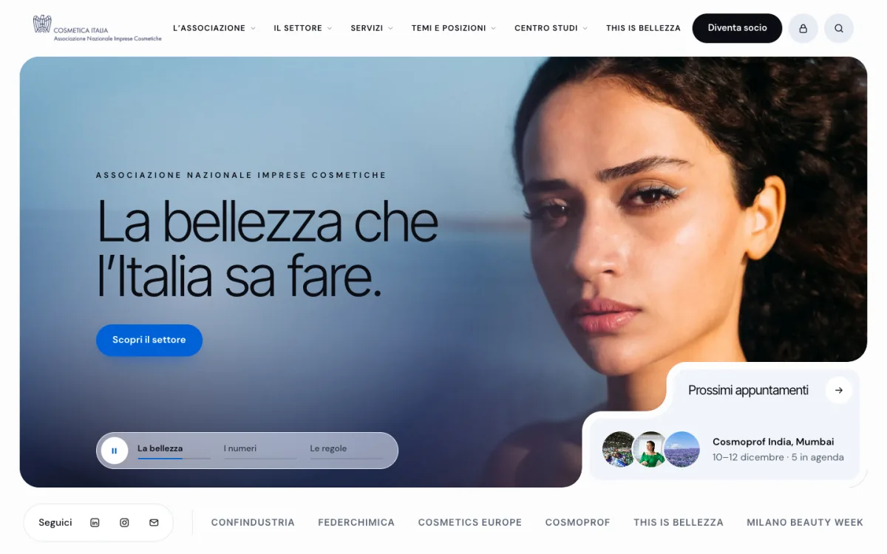
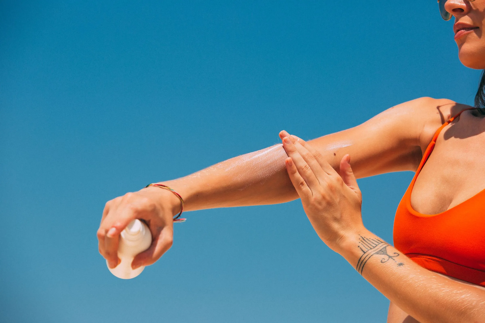

Proposta 13 · Luce mediterranea
Scheda di progetto
Una homepage chiara costruita sul concept NOVA, un sito di moda inventato da una designer e pubblicato su Instagram da uiux.amina: grandi riquadri fotografici arrotondati, card che si incastrano, un solo blu deciso usato poco, tanto spazio. Per un’associazione di imprese il calore viene dalle persone vere sotto la luce del Mediterraneo.

Riferimento
Da NOVA a Cosmetica Italia
- In NOVANella proposta
- Riquadro foto arrotondato, modella in denim sul cielo, indicatore 1-2-3Riquadro foto arrotondato con persone vere al sole, su cielo e mare blu: tre slide e, al posto dei numeri, una barra in vetro con pausa e tre voci («La bellezza», «I numeri», «Le regole»)
- Titolo nero e pesante «Wear Your Own Story.»Titolo sottile «La bellezza che l’Italia sa fare.», come chiesto dopo la prima prova (peso 300, alla VAEL)
- Card «Discover More» incastrata nell’angolo, con miniature rotondeCard «Prossimi appuntamenti» a incastro, con angoli rovesciati e il prossimo evento calcolato dalla data
- Striscia di loghi con «Follow»«Seguici» e la rete reale: Confindustria, Federchimica, Cosmetics Europe, Cosmoprof, This is Bellezza, Milano Beauty Week, in testo senza imitare loghi
- Tre card foto con etichette blu«In evidenza»: iniziative e analisi in card foto con etichette blu, carosello trascinabile
- Passi in tre card, la centrale blu con foto«Associarsi è semplice»: tre passi, il secondo in blu con la foto
- «DEFINE YOUR / WEAR YOUR / OWN STORY.»«Dalla formula / al gesto / quotidiano.»: la filiera, con i testi piccoli intrecciati e il pulsante col cielo
- About e numeri in card azzurrineL’associazione e i numeri del Centro Studi, ognuno con la sua fonte
- Caratteristiche con icone«Cosa facciamo per le imprese»: sei servizi con icone
- Recensioni, la card centrale in bluAgenda e circolari: al centro Cosmoprof Worldwide Bologna con i giorni all’apertura
- Invito con foto rotonde e bollino«Entra nella comunità» con bollino rotante «Diventa socio»
Calore
Perché non è fredda
- Le foto sono di persone vere al sole: pelle dorata, luce naturale, nessun camice e nessun prodotto su fondo bianco.
- Il blu viene soprattutto dal cielo e dal mare delle foto, non da superfici piatte.
- Il blu pieno è usato poco: un pulsante per schermata e una card per sezione.
- Angoli morbidi da 32 px e card che si incastrano, invece di griglie rigide.
- Titoli grandi e sottili, come nelle aperture premiate, al posto del grassetto istituzionale.
- Le stesse persone tornano in tutta la pagina (passi, filiera, invito), come la modella in NOVA.
Movimento
Cosa si muove
- 01 · APERTURALe slideOgni 7 secondi la foto sfuma con uno zoom lento, il titolo sale riga per riga e la linea blu della voce attiva si riempie. Tutto si ferma col mouse sopra, con il focus o con la pausa.
- 02 · TESTATAIl vetroScorrendo, la testata si accorcia e diventa una lastra di vetro chiaro.
- 03 · IN EVIDENZAIl caroselloSi trascina col mouse o si sfoglia con le frecce; le foto si avvicinano al passaggio.
- 04 · CENTRO STUDII numeriFatturato, export, lavoratori e imprese contano fino al valore quando entrano nello schermo.
- 05 · AGENDAIl conto alla rovesciaI giorni a Cosmoprof e il prossimo appuntamento si calcolano dalla data di oggi.
- 06 · ASSOCIARSIIl bollino«Diventa socio» gira lentamente; le sezioni salgono con dolcezza mentre si scorre.
Colore
Palette e contrasti
#0062D6Pulsanti, card evidenziate, numeri: la tinta del blu Confindustria (257° in OKLCH), più accesa#1F59A1Il riferimento del marchio da cui nasce il blu royal#0B0D12Titoli, testi e pulsante «Diventa socio»#535D6ETesti secondari, date e fonti#FCFCFDFondo della pagina e delle cornici a incastro#F2F5FACard dei passi, dei numeri e footer#E8F0FCDate dell’agenda, con il blu scuro #0050B3dalle fotoIl caldo non è un colore dell’interfaccia: viene dalle immaginiContrasti calcolati con la formula WCAG 2.2: tutti i testi superano il livello AA (4,5:1); il bianco sul blu royal è 5,65:1.
Tipografia
Inter Tight e DM Sans
La bellezza che l’Italia sa fare.
DM Sans per testi, pulsanti ed etichette in maiuscolo spaziato.
Rispettate le soglie: 16 px per il testo da leggere, 12 px per tutto il resto.
Qualità
Accessibilità e prestazioni
- Le slide si mettono in pausa col pulsante, col mouse e col focus; con «riduci movimento» e nel canvas restano ferme.
- Le voci della barra e la pausa hanno nomi leggibili dai lettori di schermo; le slide nascoste non ricevono il focus.
- Foto in WebP da 2400 px, tra 50 e 180 KB l’una: tutta l’apertura pesa meno di 400 KB.
- Nessun errore in console, nemmeno al primo caricamento del modello.
- Su mobile la card a incastro resta, i passi e i servizi diventano righe compatte.
Immagini
Foto e licenze




Licenza Pexels: uso gratuito anche commerciale, attribuzione non obbligatoria (indicata comunque nel footer del prototipo). Le altre immagini sono quelle già presenti nel progetto.
Comune a tutte le proposte: logo ufficiale nelle proporzioni originali, contenuti di esempio dal sito pubblico al 25/11/2026, ricerca, area riservata e newsletter dimostrative. NOVA è un concept, non un sito reale.